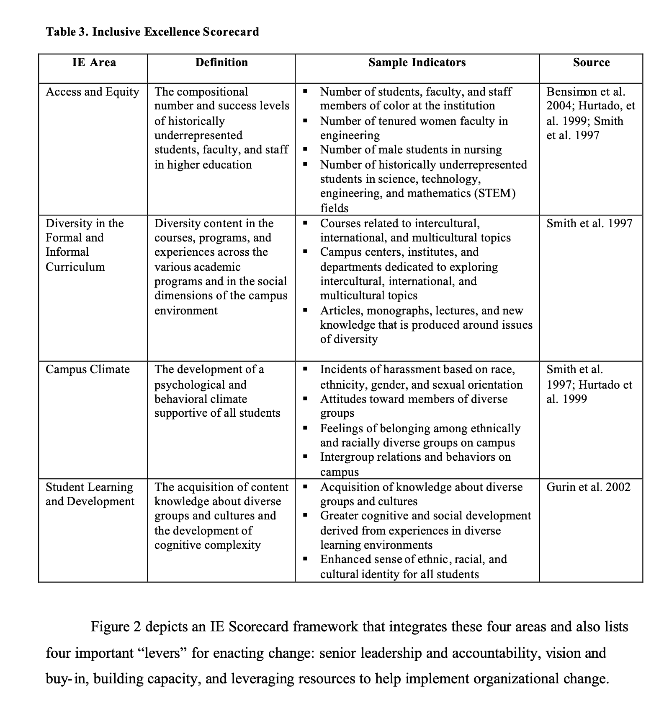

📚 Inclusive Excellence
Look over this report (don't expect you to read it, it is long):
- Damon A. Williams, Joseph B. Berger, Shederick A. McClendon. (2005) Towards a model of inclusive excellence and change in postsecondary institutions. Association of American Colleges and Universities.
But focus on page 21 Table 3 (shown below) - we will discuss this table as the basis of a model of Inclusive Excellence in Academia.
